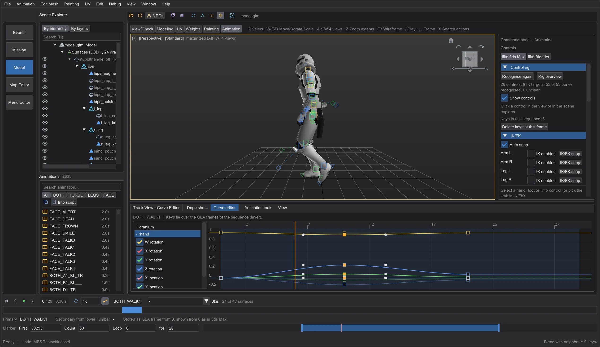
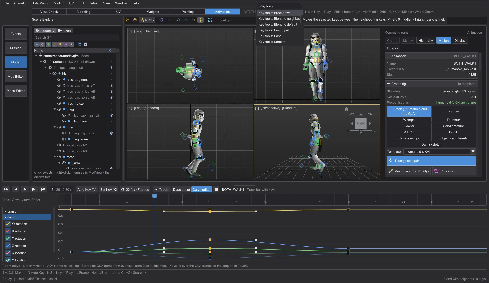
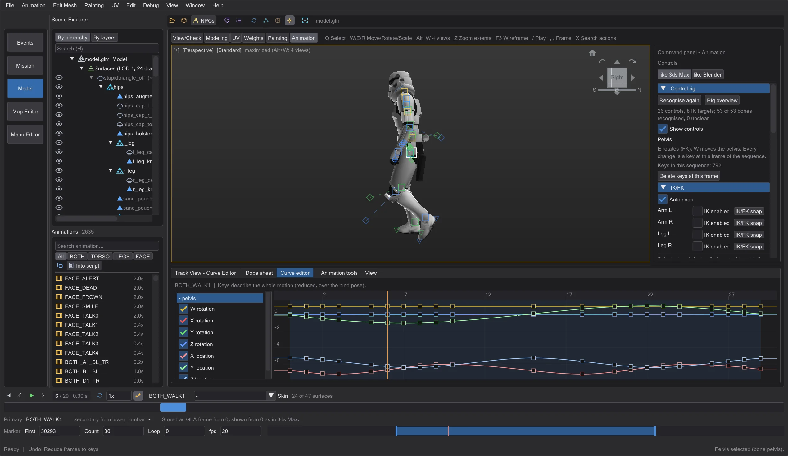

Model tab: dope sheet, curve editor and animation tools
Edit the keys of the control rig in time and as curves, blend and ease them, change timing and values, mirror whole sequences, keep poses in a library, reduce baked frames to few keys and drag the pelvis path in the view.
Dope sheet#
Dope sheet (menu Animation > Animation tools > Editors, the right-click of the view, the search X/F3 or the group Curves and animation tools) opens the tracks of the timeline as dope sheet; like 3ds Max it is called Track View - Dope Sheet, like Blender Dope Sheet. The handle above the timeline sets their height. On the left are the rows: Summary, one summary row per limb (click to fold) and one row per bone; on the right every key of the selected sequence is a diamond. Click a diamond to select it (Shift adds), drag a frame around keys to select them, drag selected keys to move them in time - always by whole frames, because the GLA stores whole frames. A click on a summary row selects all keys of that frame in the limb. The light band is the sequence of the animation.cfg line, the orange line the current frame; click the ruler to set it. Wheel zooms, the middle button pans. Only animated and Only selected filter the rows, Frame all fits the sequence. Like Blender, X deletes, G moves and S scales the selected keys while the mouse is over the editor.
Curve editor#
Curve editor (like 3ds Max Track View - Curve Editor, like Blender Graph Editor) shows one curve per channel: the rotation as quaternion W rotation, X rotation, Y rotation, Z rotation and the location X, Y, Z. Click a bone on the left to unfold its channels and switch single curves on or off. Drag a key up or down to change the value of that channel, sideways to move it in whole frames; drag a handle to shape the curve. Interpolation sets constant, linear (turns on the shortest arc, slerp) or Bezier from the selected key to the next. Tangents sets the handles: like Blender Auto Clamped (default of new keys, never overshoots), Auto, Vector, Aligned and Free; like 3ds Max the same types are called Auto, Smooth, Linear, Custom and Custom (broken). The Bezier curves are computed exactly like the F-curves of Blender (handle rule, Continuous Acceleration, evaluation); a dragged Auto handle becomes Aligned and a Vector handle Free, as there. Ctrl+wheel zooms the values. The quaternion is normalised for the pose, so the figure always turns rigidly.

Animation tools#
Every tool is in the menu Animation > Animation tools, in the right-click of the editor and of the view and in the search, each with a tooltip. The Key tools work on the selected keys, channel by channel: Breakdown, Blend to neighbour, Blend to default, Push / pull, Ease and Smooth. The Pose sliders set the pose at the current frame from the previous and next key: Breakdowner, Push pose, Relax pose, Blend with neighbour, Blend to rest pose. Each opens a small slider; the view shows the result while you drag, Apply keeps it as one undo step, Cancel restores. Timing: snap the selection to the current frame (or move it so that the first or last key lands there), insert or remove frames at the current frame, time offset, share key times (also exactly those of the bone selected last). Values: zero, to the current value, negate, reverse, mirror at the current frame; Anim offset carries a change at one key over to the other keys of the bone. Mirror animation (left/right) mirrors the whole sequence over the l_/r_ bones. The Pose library keeps named poses in the model document and applies them, also mirrored. The Markers (animation.cfg) use the animation.cfg line: keys at its first and last frame, close the loop, select the keys inside.

Clean up and reduce#
A GLA stores every frame. Reduce frames to keys turns the frames of the selected sequence (with the rig keys on top) into few keys you can edit: per bone keys are added where the curve deviates most, then every key that is not needed is removed again; linear and Bezier are both tried and the one with fewer keys stays. The keys then describe the whole motion over the bind pose. The rule is the bound of compressBone from stage 3: baked again, every bone frame turns within the rounding that the GLA format itself allows, and the location differs by at most one 1/64 step. Measured on every sequence of _humanoid: Jedi Academy keeps 58 % of the bone frames as keys, Jedi Outcast 66 %, Movie Duels 43 %, every bone frame within the bound. Remove redundant keys removes keys equal to their neighbours, Remove static channels keeps one key for bones that do not move, Quaternion filter gives every quaternion the sign of its neighbour, so the curves do not jump (the channels are quaternions, an Euler filter is not needed). Bake the result with Bake into the GLA onto the target slot as before.

Dragging motion paths#
On the path of the pelvis or the root (Path for selection) every dot can be dragged in the view: the bone moves there at that frame, in the plane of the view through the dot, and gets a key (Ctrl+Z undoes it). With Anim offset the other keys move along. The paths of hands, feet and the saber tip move their IK target instead (page IK/FK).